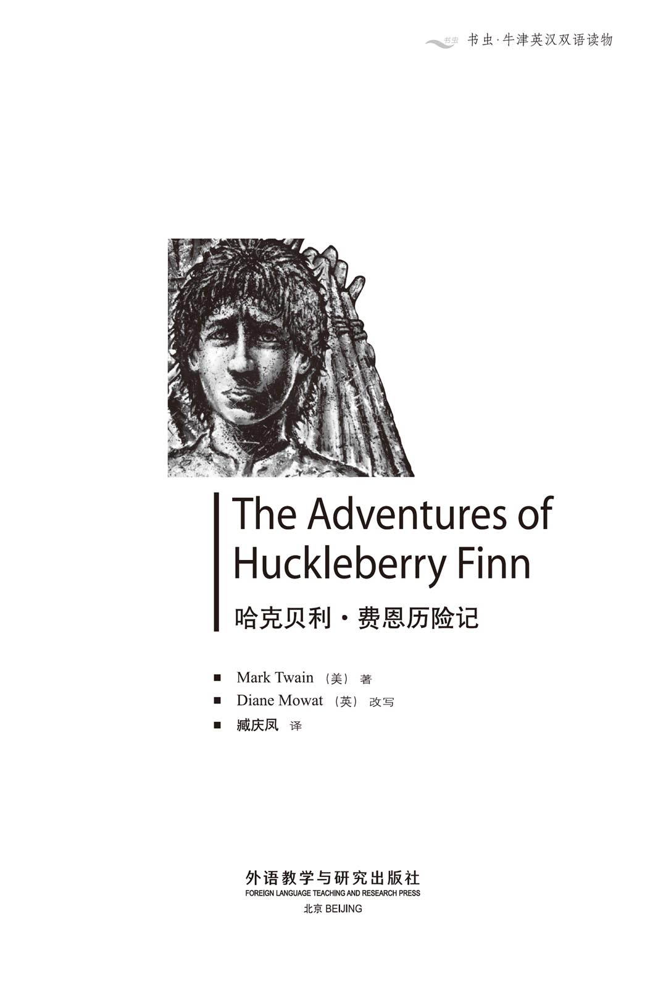
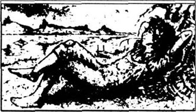
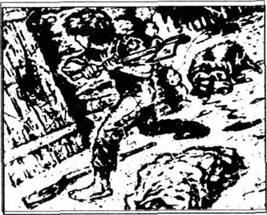
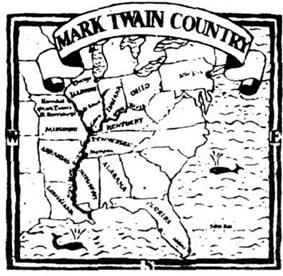
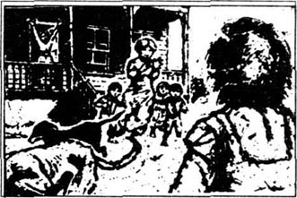
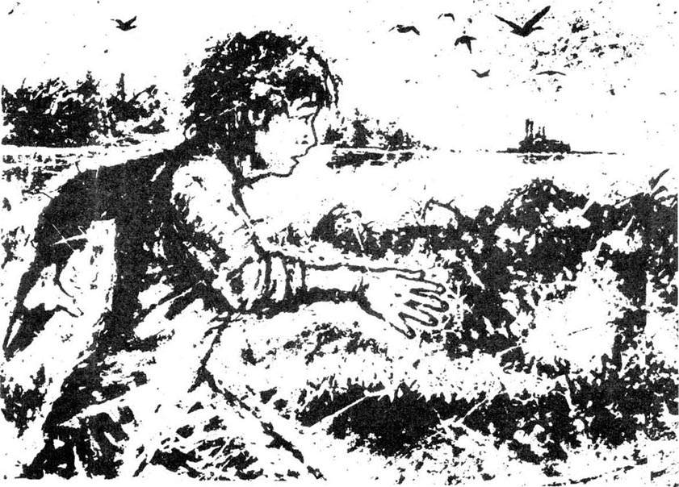
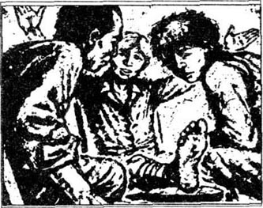
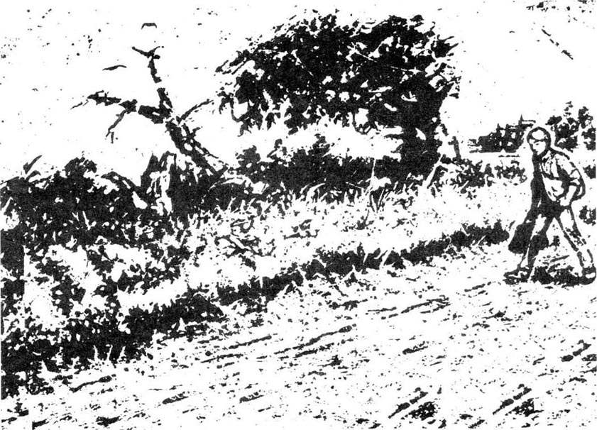
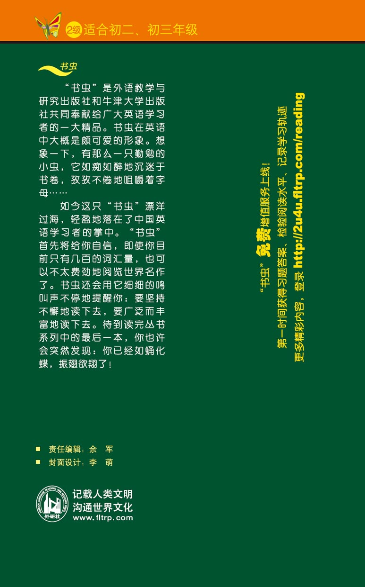

扉页

版权页
京权图字 01-96-1574
Originally published by Oxford University Press, Great Clarendon Street, Oxford. © 1994
This edition is licensed for sale in the People's Republic of China only and not for export therefrom.
'Oxford' is a registered trademark of Oxford University Press.
只限中华人民共和国境内销售， 不包括香港特别行政区、 澳门特别行政区及台湾省。 不得出口。
图书在版编目（CIP）数据
哈克贝利·费恩历险记：英汉对照／（美）马克·吐温（Twain, M.）著；（英）莫厄特（Mowat, D.）改写；臧庆凤译．—北京：外语教学与研究出版社，1997.1（2014.12 重印）
（书虫·牛津英汉双语读物）
书名原文：The Adventures of Huckleberry Finn
ISBN 978-7-5600-1174-5
Ⅰ．①哈… Ⅱ．①马…②莫…③臧… Ⅲ．①英语—汉语—对照读物②儿童文学—长篇小说—美国—近代 Ⅳ．①H319.4：I
中国版本图书馆CIP数据核字（2013）第039354号
出版人： 蔡剑峰
责任编辑：余 军
封面设计：李 萌
出版发行：外语教学与研究出版社
社 址：北京市西三环北路19号（100089）
网 址：http://www.fltrp.com
版 次：1997年1月第1版
书 号：ISBN 978-7-5600-1174-5
凡侵权、盗版书籍线索，请联系我社法律事务部
举报电话：（010）88817519 电子邮箱：banquan@fltrp.com
法律顾问：立方律师事务所 刘旭东律师
中咨律师事务所 殷 斌律师
简介
简 介
“我从来没有一个家，”哈克写道，“或像其他所有的男孩子那样去上学。我睡在街上或林子里，只要我想，我就能做我想做的事情。这真是一种美好的生活。”
所以，当哈克去和道格拉斯寡妇住在一起时，他根本不喜欢这样。他不得不保持干净、整洁，始终都要听话，还得去上学。然后，他爸爸来了，把他带走住在了林子里。起初，哈克挺高兴，但是，他爸爸总是打他，所以，哈克决定逃走。
他遇到了吉姆，一个逃跑的奴隶，他们决定结伴乘木筏沿密西西比河顺流而下。当然他们遇到各种各样的麻烦和危险，但是，哈克感到很愉快。河上的生活是如此地自由、轻松、舒适……
马克·吐温于1835年出生于佛罗里达州，1910年去世。他的真名是塞缪尔·克莱门斯，美国内战开始前，他是密西西比河船上的一名领航员。他也是一个报纸撰稿人和作家，他的小说《汤姆·索亚历险记》和《哈克贝利·费恩历险记》非常著名。
目录
1 Huck in trouble
1
Huck in trouble
You don't know about me if you haven't read a book called The Adventures of Tom Sawyer. Mr Mark Twain wrote the book and most of it is true. In that book robbers stole some money and hid it in a very secret place in the woods. But Tom Sawyer and I found it, and after that we were rich. We got six thousand dollars each—all gold.
In those days I never had a home or went to school like Tom and all the other boys in St Petersburg. Pop was always drunk, and he moved around a lot, so he wasn't a very good father. But it didn't matter to me. I slept in the streets or in the woods, and I could do what I wanted, when I wanted. It was a fine life.
When we got all that money, Tom and I were famous for a while. Judge Thatcher, who was an important man in our town, kept my money in the bank for me. And the Widow Douglas took me to live in her house and said I could be her son. She was very nice and kind, but it was a hard life because I had to wear new clothes and be good all the time.
In the end, I put on my old clothes and ran away. But Tom came after me and said that I had to go back, but that I could be in his gang of robbers. So, I went back, and the widow cried and I had to put on those new clothes again. I didn't like it at all. Her sister, Miss Watson, lived there too. She was always saying, 'Don't put your feet there, Huckleberry,' and 'Don't do that, Huckleberry.' It was terrible.
When I went up to bed that night, I sat down in a chair by the window. I sat there a good long time, and I was really unhappy. But just after midnight I heard 'mee-yow! mee-yow!' outside. Very softly, I answered, 'mee-yow! mee-yow!' Quietly, I put out the light and got out through the window. In the trees, Tom Sawyer was waiting for me.
We went through the trees to the end of the widow's garden. Soon we were on top of a hill on the other side of the house. Below us we could see the river and the town. One or two lights were still on, but everything was quiet. We went down the hill and found Joe Harper, Ben Rogers and two or three more of the boys. Then Tom took us down the river by boat to his secret place, which was a cave deep in the side of a hill. When we got there, Tom told us all his plan.
'Now, we'll have this gang of robbers,' he said, 'and we'll call it Tom Sawyer's Gang. If somebody hurts one of us, the others will kill him and his family. And if a boy from the gang tells other people our secrets, we'll kill him and his family, too.'
We all thought this was wonderful, and we wrote our names in blood from our fingers. Then Ben Rogers said, 'Now, what's the gang going to do?'
'Nothing,' replied Tom. 'Just rob and kill. We stop people on the road, and we kill them, and take their money and things. But we can keep a few of the people, and then their friends can pay money to get them back. That's what they do in the stories in books.'
But Ben wasn't happy. 'What about women?' he asked. 'Do we kill them, too?'
'Oh, no,' Tom answered. 'We're very nice to them, and they all love us, and they don't want to go home.'
'Then the cave will be full of women, and people waiting, and we'll have to watch them all night...'
'We'll all go home now,' Tom said, 'and we'll meet next week, and we'll kill somebody and rob somebody.'
Ben wanted to begin on Sunday, but the others said no. It was bad to kill and rob on a Sunday.
My clothes were very dirty and I was very tired when I got back. Of course, the next morning Miss Watson was angry with me because of my dirty clothes, but the widow just looked unhappy. Soon after that we stopped playing robbers because we never robbed people and we never killed them.
* * *
Time went on and winter came. I went to school most of the time and I was learning to read and write a little. It wasn't too bad, and the widow was pleased with me. Miss Watson had a slave, an old man called Jim, and he and I were good friends. I often sat talking to Jim, but I still didn't like living in a house and sleeping in a bed.
Then, one morning, there was some new snow on the ground and outside the back garden I could see footprints in the snow. I went out to look at them more carefully. They were Pop's footprints!
A minute later, I was running down the hill to Judge Thatcher's house. When he opened the door, I cried, 'Sir, I want you to take all my money. I want to give it to you.'
He looked surprised. 'Why, what's the matter?'
'Please, sir, take it! Don't ask me why!'
In the end he said, 'Well, you can sell it to me, then.' And he gave me a dollar and I wrote my name on a piece of paper for him.
That night when I went up to my room, Pop was sitting there, waiting for me! I saw that the window was open, so that was how he got in.
He was almost fifty and he looked old. His hair was long and dirty and his face was a terrible white colour. His clothes were old and dirty, too, and two of his toes were coming through his shoe. He looked at me all over for a long time, and then he said, 'Well, just look at those clean, tidy clothes! And they say you can read and write now. Who said you could go to school?'
'The widow...' I began.
'Oh, she did, did she? Well, you can forget about school. I can't read and your mother couldn't read; no one in our family could read before they died, so who do you think you are? Go on, take that book and read to me!'
I began to read, but he hit the book and it flew out of my hand, across the room. Then he shouted, 'They say you're rich—how's that'?'
'It isn't true!'
'You give me that money! I want it. Get it for me tomorrow!'
'I haven't got any money. Ask Judge Thatcher. He'll tell you. I haven't got any money.
'Well, give me what you've got in your pocket now. Come on, give it to me!'
'I've only got a dollar, and I want that to...'
'Give it to me, do you hear?'
He took it, and then he said he was going out to get a drink. When he was outside the window, he put his head back in and shouted, 'And stop going to that school, or you know what you'll get!'
The next day he was drunk, and he went to Judge Thatcher to get my money. The judge wouldn't give it to him. But Pop didn't stop trying and every few days I got two or three dollars from the judge to stop Pop from hitting me. But when Pop had money, he got drunk again and made trouble in town. He was always coming to the widow's house, and she got angry and told him to stay away. Then Pop got really angry and one day he caught me and took me a long way up the river in a boat. I had to stay with him in a hut in the woods and I couldn't go out by myself. He watched me all the time. The widow sent a man to find me and bring me home, but Pop went after him with a gun, and the man ran away.
robber n. person who steals. 强盗；贼。
matter v. be of importance. 关系重要。
famous adj. known widely. 著名的。
run away escape. 逃走。
widow n. a woman whose husband is dead. 寡妇。
terrible adj. extremely bad. 极坏的。
wait for stay where one is. 等待。
hill n. smaller than a mountain. 小山。
cave n. hole. 洞穴。
hurt v. damage. 伤害。
pay v. give money to somebody. 付款。
footprint n. a footshaped mark. 足迹；脚印。
almost adv. very nearly. 几乎；差不多。
judge n. someone who decides if a person is a criminal or not. 法官。
in the end finally. 最后；终于。
hit v. strike. 击；打。
shout v. cry. 大叫；大喊。
drink n. alcoholic liquor. 酒。
get drunk 喝醉。
make trouble bring unhappiness. 带来麻烦。
hut n. small wooden house. 小木屋。
by oneself alone. 独自地。
watch v. keep the eyes on. 监视。
哈克遇到麻烦
1 哈克遇到麻烦

如果你没有看过《汤姆·索亚历险记》那本书，你就不知道我。该书是马克·吐温写的，大部分是真实的。在那本书中，强盗们偷了钱，并把钱藏在了树林中一个很秘密的地方。但我和汤姆·索亚找到了这笔钱，在这之后，我们发财了。我们每个人得到了6000美元——全是金币。
在那些日子里，我从来没有一个家，或是像汤姆和圣彼得斯堡其他所有的男孩那样去上学。爸爸总是喝得醉醺醺的，经常转来转去，所以，他不是一个很好的父亲。但是，这对我来说无所谓。我睡在街上或林子里，只要我想，我就能做我想做的事情。这真是一种美好的生活。
当我和汤姆得到所有那些钱时，我们出了一阵子名。撒切尔法官是我们镇子上的一个重要人物，他替我将钱存在了银行。道格拉斯寡妇领我到她家去住，并说我可以做她的儿子。她非常和蔼，但这是一种令人难以忍受的生活，因为我不得不穿新衣服，而且始终都要听话。
最后，我穿上我的旧衣服跑掉了。可汤姆追上了我，说我得回去，但我仍可以加入他的强盗团伙。所以，我回去了，寡妇叫着，我不得不又穿上那些新衣服。我根本不喜欢这一切。她的姐姐沃森小姐也住在那儿。她总是说：“别把你的脚放在那儿，哈克贝利，”还有“别干那个，哈克贝利。”真是糟透了。
那天晚上，上床睡觉的时候，我坐在窗边的椅子上。我坐了很久，真是很难受。但是，午夜刚过，我听到外面“喵！喵！”的声音。我很轻地回答着“喵！喵！”。我轻轻地吹灭蜡烛，从窗户钻了出去。汤姆·索亚正在树丛中等我。
我们穿过树丛来到寡妇的花园的尽头。不一会儿，我们就到了房子另一头的一个小山顶上。我们能看到山下的小河和镇子。一两处烛光仍亮着，但是，万物都是静悄悄的。我们下了山，找到了乔·哈珀，本·罗杰斯，还有两三个其他的男孩。然后，汤姆用船把我们带到了那个秘密的地方，这个秘密的地方是山坡深处的一个岩洞。当我们到那时，汤姆把他的全部计划告诉了我们。
“现在，我们就来组织这个强盗团伙，”他说，“我们就叫它汤姆·索亚团伙吧。如果有人伤害我们中的某个人，其他的人就要杀了他和他的全家。如果这个团伙的哪个男孩把我们的秘密告诉了其他人，我们也要把他和他的全家都给杀喽。”
我们都觉得棒极了，我们用手指上的血写上了我们的名字。然后，本·罗杰斯说：“这团伙到底要干些什么呢？”
“什么都不干，”汤姆回答道，“只是抢劫和杀人，我们在路上拦截人，杀了他们，拿走他们的钱和东西。但是，我们可以留下几个人，这样，他们的朋友可以交钱把他们赎回去。这就是人们在书中故事里所做的。”
但是，本不高兴了。“女人怎么办？”他问道，“我们也杀她们吗？”
“噢，不，”汤姆回答。“我们待她们很友好，她们都爱我们，她们不想回家。”
“那么，岩洞里全都是女人，人们等待着，我们将不得不整夜监视她们……”
“我们现在都回家吧，”汤姆说，“我们下周碰头，杀个什么人，抢劫个什么人。”
本想星期天开始，但是，其他的人不同意。星期天杀人抢劫是不好的。
我回来时，衣服很脏，我也很疲倦。第二天早晨，当然是因为我的脏衣服，沃森小姐很生我的气，可寡妇只是看上去不高兴。之后不久，我们就不玩强盗的游戏了，因为，我们从来没抢劫过人，也从来没杀过人。
* * *
时间流逝，冬天来到了。大部分时间我去学校上学，我学认字，也学着写一点。不太糟，寡妇对我挺满意。沃森小姐有一个奴隶，是个叫吉姆的老头，我和他是好朋友。我经常坐着和他聊天，但我仍然不喜欢住在房子里和睡在床上。
后来，一天早晨，地上覆盖了一层新雪，我能够看见后花园外边雪中的脚印。我出去更加仔细地察看，是爸爸的脚印！
片刻之后，我跑下山来到了撒切尔法官家。他打开门时，我叫喊着：“先生，我要你把我的钱都拿去。我想把钱送给你。”
他看上去很惊讶。“嗨，怎么回事？”
“先生，请收下！不要问我为什么！”
最后，他说：“好吧，你可以卖给我。”他给了我一个美元，我在一张纸上为他写上了我的名字。
那天晚上，当我走进我的房间时，爸爸坐在那儿，正在等我！我看见窗户是开着的，所以，他是从窗户进来的。
他差不多50岁了，显得很老。他的头发又长又脏，脸色白得可怕。他的衣服也又旧又脏，两个脚指头从鞋里露了出来。他久久地上下打量着我，然后说道：“噢，就看看这些干净、整齐的衣服吧！他们说你现在能认字、写字了。谁说你可以上学了？”
“寡妇……”我开始说。
“噢，她说的，是吗？好吧，你可以不提学校。我不认字，你妈不认字；咱们家人一直到死，都没有人认字，所以，你觉得你挺不错吧，拿起那本书，给我念念！”
我开始念，但是，他把书从我的手里打飞，穿过房间。然后，他喊道：“他们说你发财了——那是怎么回事？”
“那不是真的！”
“你把钱给我！我要钱。明天给我把钱拿来！”
“我没有钱。问问撒切尔法官，他会告诉你。我没有钱。”
“好吧，把你口袋里的钱给我。快点，把钱给我！”
“我只有一美元，我想用它去买……”
“把钱给我，你听见没有？”
他拿了钱，然后他说他要去喝一杯。到了窗外时，他把头伸了回来，叫喊道：“别再去那个学校了，否则你清楚你会得到什么！”
第二天，他喝醉了，他去了撒切尔法官家去要我的钱，法官没给他。但是，爸爸不停地去要钱。每隔几天，我就从法官那儿拿两三美元给爸爸，免得他打我。但是，爸爸有钱时，就喝醉酒，在镇上惹麻烦。他总是到寡妇的家里来，寡妇很气愤，让他走开。爸爸真生气了。一天，他抓住了我，用一只船带我往河上游走了很长一段路。我不得不和他待在树林中的一个小木屋里，我不能独自外出。他一直监视着我。寡妇派了个人找我，要把我带回家，可是爸爸拿了支枪跟在后面，那个人被吓跑了。
2 Huck escapes and finds a friend
2
Huck escapes and finds a friend
Mostly it was a lazy, comfortable kind of life, but after about two months Pop began to hit me too much with his stick. He often went away into town too, and then he always locked me in the hut. Once he was away for three days and I thought I was never going to get out again.
When he came back that time, he was drunk and angry. He wanted my money, but Judge Thatcher wouldn't give it to him. The judge wanted to send me to live with the widow again, Pop told me. I wasn't very pleased about that. I didn't want to go back there.
So I decided to escape and go down the river and live in the woods somewhere. When Pop was out, I began to cut a hole in the wooden wall of the hut. In a few days, when the hole was bigger, I could take the wood out, escape through the hole, and put the wood back.
One morning Pop sent me down to the river to catch some fish for breakfast. To my surprise, there was a canoe in the water and there was no one in it. Immediately, I jumped into the river and brought the canoe to the side. It was lucky that Pop didn't see me, and I decided to hide the canoe under some trees and use it when I escaped.
That afternoon, Pop locked me in and went off to town. 'He won't be back tonight,' I thought, so I began to work hard at my hole. Soon I could get out through it, and I carried food and drink and Pop's gun down to the canoe. Then I put back the wood to hide the hole, took the gun and went into the woods. There I shot a wild pig and took it back to the hut with me. Next, I broke down the door with an axe. I carried the pig into the hut and put some of its blood on the ground. Then I put some big stones in a sack and pulled it along behind me to the river. Last of all, I put some blood and some of my hair on the axe. I left the axe in a corner of the hut and I took the pig down to the river.
'They won't know it's only a pig in the river,' I said to myself. 'They'll think it's me.'
Then I took the canoe and went down the river to Jackson's Island. By then it was nearly dark, so I hid the canoe under some trees and went to sleep.
It was after eight o'clock when I woke up the next day and the sun was high in the sky. I was warm and comfortable and I didn't want to get up. Suddenly, I heard a noise up the river. Carefully, I looked through the trees, and I saw a boat full of people. There was Pop, Judge Thatcher, Tom Sawyer and his Aunt Polly and his brother Sid, and lots of others. They were looking for my body in the river. I watched them, but they didn't see me, and in the end they went away. I knew that nobody was going to come and look for me again. I found a good place under the trees to sleep and to put my things. Then I caught a fish and cooked it over a fire.
I lived like that for three days, and then I decided to have a look round the island. So I went into the woods. 'This is my island,' I thought. 'I'm the only person on it.'
Suddenly, just in front of me, I saw a fire, and it was still smoking. There was somebody on my island! I didn't wait. I turned and went straight back. But I couldn't sleep. After a time, I said to myself, 'I can't live like this. I must find out who it is.'
Silently, I moved along the river in my canoe, under the darkness of the trees. And then I stopped. Through the trees I could see the light of a fire. Afraid, I left my canoe and went nearer. There was a man lying by the fire. Suddenly, he sat up and I saw that it was Jim, Miss Watson's slave! I was really happy to see him! 'Hello, Jim,' I cried, and I jumped out from behind the tree.
Jim fell to his knees. 'Please don't hurt me!' he cried. 'I've always been good to dead people!'
'It's all right, Jim. I'm not dead,' I said. 'But why are you here on the island?' I asked.
'Well, Huck,' he began. 'Old Miss Watson wanted to sell me. A man came into town and told Miss Watson that he'd buy me for eight hundred dollars. She couldn't say no, so I ran away. I ran down to the river to hide, but everybody in the town was there. They said you were dead, Huck. I had to wait all day to get away. When it was dark, I got on to a big boat and hid. When we came near this island, I jumped into the water and swam here.'
Jim finished his story and then we both carried all our things into a cave and hid the canoe under some trees. We were just in time because then the rains came. It rained for days, and the river got higher and higher. All kinds of things came down the river and one night there was a little wooden house, lying half on its side. We got the canoe out and went to take a look. Through the window we could see a bed, two old chairs and some old clothes. There was something lying in the corner and we thought it looked like a man. Jim went in to see, but he said, 'He's dead. Someone shot him in the back. Don't look at his face, Huck. It's terrible!'
I didn't want to see the dead man's face, so I didn't look. We just took the old clothes and a few other things, and went back to our cave on the island.
Another night, when we were out looking for things on the river, we found a raft. It was made of good, strong wood, and was about four metres by five metres. 'This could be useful,' I said to Jim, so we pulled it back to the island behind the canoe, and tied it up under the trees.
lock v. fasten with a lock. 锁。
canoe n. 独木舟。
immediately adv. suddenly. 突然地。
go off leave. 离去。
go into enter. 走进。
work at sth. giving time to sth. 致力于。
carry v. take out. 取出；拿。
break down get down. 将（门、墙）捣毁。
catch v. get hold of. 捕捉；抓住。
cook v. prepare by heating. 烹调。
find out discover. 探知。
lie v. be at rest. 躺；卧。(p.t. lay, p.p. lain, pres. part. lying)
slave n. a person who belongs to someone and has to work, but gets no money. 奴隶。
hide v. prevent from being seen. 藏起来 (p.t. hid, p.p. hidden)。
in time not late. 及时。
raft n. 筏。
tie v. fasten or bind. 捆；扎。
哈克出逃并找到一个朋友
2 哈克出逃并找到一个朋友

生活基本上是懒散、舒适的，但是，大约两个月后，爸爸开始更加狠命地用棍子打我。他也经常离开小木屋到镇上去，然后，他总是把我锁在小木屋内。有一次，他走了三天，我想我永远也出不去了。
那次他回来时，醉醺醺的，而且还很生气。他想要我的钱，但撒切尔法官不给他。爸爸告诉我，法官想把我送去再和寡妇住在一起。我对此不太高兴。我不想回那儿去。
所以，我决定逃走，顺流而下，住在森林里的什么地方。爸爸出去的时候，我开始在小木屋的木墙上挖洞。过不了几天，洞大些的时候，我就可以把木头拿开，从洞里逃走，然后把木头放回去。
一天早晨，爸爸打发我到河里去抓鱼当早餐。令我吃惊的是河里有一只独木舟，里面没有人。我立即跳进河里，把独木舟拉到了岸边。幸运的是爸爸没看见我，我决定把独木舟藏在树下，等我逃跑时好用。
那天下午，爸爸把我锁在屋里到镇上去了。我想：“他今晚不会回来了。”所以，我开始拼命挖洞。不久，我就能钻出去了。我带上吃的、喝的和爸爸的枪上了独木舟。然后，我把那块木头放回去把洞掩盖起来，拿上枪，进了林子。在森林里，我打了一只野猪，把它带回了小木屋。接着，我用斧子把门劈开，拖着猪进了小木屋，在地上弄了些猪血。然后，我在袋子里放了些大石头，拽着袋子一直到了河边。最后，我在斧子上弄了些血和我的头发。我把斧子丢在小木屋的一个墙角，把猪扔到了河里。
“他们不会知道河里的东西只是一头猪，”我自言自语道。“他们会以为那是我。”
然后，我解下独木舟，顺流而下来到杰克逊岛。那时候，天快黑了，所以，我把独木舟藏在树下，然后睡觉了。
第二天当我醒来时，已是8点多了，太阳已高高地挂在天上了。我感觉暖融融的，很舒服，我不想起来。突然，我听到河上游一阵喧闹声，我透过树丛仔细观看，看见一艘挤满人的船。船上有爸爸、撒切尔法官、汤姆·索亚和他的菠莉姨妈，还有汤姆的弟弟锡德以及许多其他的人。他们在河里寻找我的尸体。我看着他们，可他们没看见我。最后，他们走了。我知道不会有人再来找我了。我在树下找了个睡觉、放东西的好地方。然后，我抓到了一条鱼，在火上烤了。
我在岛上就这样生活了三天。然后，我决定到岛上转一转。我进了森林。“这是我的岛，”我想，“我是这岛上唯一的一个人。”
突然，就在我面前，我看见了一堆火，仍然冒着烟。我的岛上还有别人！我一刻没停，转过身来，径直回到原地。但我睡不着觉。过了一段时间，我自言自语道：“我不能这样的生活下去，我必须弄清楚他是谁。”
我坐在独木舟里，借着树影的黑暗，轻轻地顺流而下。然后，我停了下来。透过树丛，能看见一处火光。我胆战心惊地离开了独木舟，靠近火堆。有个人躺在火边。突然，他坐了起来，我看见那人是吉姆，沃森小姐的奴隶！看见他，我真高兴！“你好，吉姆！”我喊道，从树后跳了出来。
吉姆跪了下来。“请别伤害我！”他叫道。“对死去的人，我一直总是友好的！”
“没事儿，吉姆。我没死，”我说，“可你为什么在这个岛上呢？”我问。
“唉，哈克，”他开始道，“老沃森小姐想要卖我。一个男人来到镇上告诉沃森小姐，他要花800美元买我。她答应了，所以，我就逃了。我跑到河边藏了起来，可镇上所有的人都在那儿。他们说你死了，哈克。我不得不等上一整天再逃走。天黑时，我上了一条大船，藏在那儿，当我们靠近这个岛时，我跳进水里，游到了这儿。”
吉姆讲完了他的经历，然后，我们俩把我们所有的东西都搬到了一个岩洞里，把独木舟藏在树下。我们刚干完，就下起了雨。雨接连下了数日，河水越涨越高。各种各样的东西从河上游漂了下来。一天夜里，有一座小木房子斜着浮在水面上。我们把独木舟弄出来，划过去看了看。透过窗户，我们能看到一张床，两把旧椅子，还有一些旧衣服。屋角那儿躺着什么东西，看起来像个人。吉姆进去看了看，可他说：“他死了。有人在他背后开了枪。别看他的脸，哈克。太可怕了！”
我根本不想看死人的脸，所以我没看。我们拿了些旧衣服和一些别的东西，便回到了岛上的岩洞里。
又一天夜里，当我们出去寻找河上的东西时，我们发现了一个木筏子。它是由很好、很结实的木头做成的，大约5米长，4米宽。“可能会有用的，”我对吉姆说。所以，我们把它拖在小木舟后带了回来，并把它栓在了树下。
3 Huck and Jim travel south
3
Huck and Jim travel south
For some days everything went along quietly, but we were getting bored. We wanted to know what was happening in town and so I decided to go and find out. Jim said, 'Why don't you wear the old dress and the hat that we found in the house? People won't know you, then. They'll think you're a girl.' And so I did.
Just after it was dark, I got into the canoe and went up the river to the bottom of the town. There, I left the canoe and went on foot. Before long, I came to a little house which was always empty. Now there was a light on, and when I looked through the window, I saw a woman of about forty. She was a stranger and that was good because she didn't know me. So I knocked on the door. 'I must remember that I'm a girl,' I said to myself.
The woman opened the door. 'Come in,' she said. She looked at me with her little bright eyes. 'What's your name?' she asked.
'Sarah Williams,' I replied. 'I'm going to see my uncle, on the other side of town. My mother's ill, you see, and she needs help.'
'Well, you can't go there by yourself now. It's too dark. My husband will be home in about an hour. Wait for him and he'll walk with you.'
And then she began to tell me about all her troubles. I was getting bored with all this until she said something about Pop and my murder.
'Who did it?' I asked.
'Well,' she replied, 'some people say old Finn did it himself; other people think it was a slave who ran away that night. His name was Jim. They'll give three hundred dollars to anybody who finds him—and they'll give two hundred dollars for old Finn. He got drunk and left town with two strangers. A lot of people think he killed his boy and he's going to come back one day, and get all Huck Finn's money.'
'And what about the slave?' I asked.
'Oh, they'll soon catch him. People want the three hundred dollars. I think he's on Jackson's Island, you know. I've seen smoke there. My husband's gone to get two of his friends and they're going over there with a gun later tonight.'
When I heard this, my hands began to shake. The woman looked at me strangely, but then she smiled and said kindly, 'What did you say your name was?'
'M-Mary Williams.'
'Oh,' she said, 'I thought it was Sarah.'
'Er... well, yes, it is. Sarah Mary Williams. Some people call me Sarah and some people call me Mary, you see.'
'Oh, do they?' She smiled again. 'Come on, now—what's your real name? Bill? Bob? I know you're not really a girl.'
So then I had to tell her another story, with a different name, and I said I was running away. She said she wouldn't tell anybody, and gave me some food before I left. I hurried back to the island and Jim.
'Quick, Jim!' I cried, waking him up. 'They're coming to get us!'
We got out the raft as fast as we could, put all our things on it, tied the canoe on behind, and moved off down the river. When it began to get light, we hid. When it was dark again, we travelled on. On the fifth night we passed St Louis, and we decided to go on down to Cairo in Illinois, sell the raft there and get a boat to Ohio. There are no slaves in Ohio.
We slept for most of that day and we began our journey again when it was dark. After some time, we saw lights on the Illinois side of the river and Jim got very excited. He thought it was Cairo. Jim got the canoe ready and I went off in it to take a look al those lights. But it wasn't Cairo.
After that, we went on down the river. Ii was very dark that night and it wasn't easy to see where we were going. Suddenly, a big steamboat came at us very fast, and the next minute it was right over us. Jim and I jumped off the raft into the water. The boat hit the raft and went on up the river.
When I came up out of the water, I couldn't see Jim anywhere. I called out his name again and again, but there was no answer. 'He's dead!' I thought. Slowly, I swam to the side of the river and got out. I saw that I was near a big old wooden house. Suddenly a lot of very angry dogs jumped out at me. They made a terrible noise and someone called from the house, 'Who's there?'
'George Jackson,' I answered quickly. 'I've fallen off a river boat.'
Well, the people who lived in that house were very kind, and they took me in and gave me some new clothes and a good meal. I told them that my family were all dead, so they said I could stay with them as long as I wanted. It was a beautiful house and the food was good there, so I stayed.
A few days later one of the slaves in the house came to me and said, 'Come with me!' Together, we went down to some trees by the river. 'In there!' he said and went away.
On the ground, I found a man, asleep. It was Jim! I was really pleased to see him. When the steamboat hit the raft, Jim told me, the raft didn't break up. Jim swam after it and caught it. Then he began to look for me.
We decided to leave at once. It's all right living in a house for a little while, but you feel more free and easy and comfortable on a raft.
go along proceed. 进行。
get bored be tired of. 厌烦。
on foot walking. 步行。
before long soon. 不久。
trouble n. worry; unhappiness; difficulty. 不幸，困难。
murder n. unlawful killing of a person. 谋杀。
hurry v. move quickly. 匆忙；赶快。
canoe n. light boat moved by one or more paddles. 独木舟。
travel v. going to a place. 旅程；路程。
steamboat n. vessel propelled by steam. 汽船。
noise n. loud and unpleasant sound. 噪音；闹声。
fall v. go down. 落下；跌下。
as long as provided that. 只要；如果。
哈克和吉姆向南旅行
3 哈克和吉姆向南旅行

几天来，一切都很顺利。但是，我们有点烦了。我们想知道镇上发生了什么事情，于是，我决定去查清楚。吉姆说：“你为什么不穿上我们在那木房子里找到的旧衣服，戴上那帽子呢？那样，人们就不会认出你。他们会以为你是一个女孩呢。”于是，我照着他说的做了。
天刚黑，我上了独木舟，往上游划去来到镇边。我把独木舟留在那儿，步行前往。不久，我来到了一座小房子前。这座小房子以前一直是空的，但现在里面有亮光，当我透过窗户往里望时，我看到了一位大约40岁的女人。是个陌生人，这不错，因为她不认识我。所以，我敲了敲门，“我必须记住我是一个女孩儿，”我自言自语道。
那女人开了门。“进来吧，”她说道。她用她那小小的、亮亮的眼睛打量着我。“你叫什么名字？”她问道。
“萨拉·威廉斯，”我回答道。“我打算去见我的舅舅，他住在镇子的另一头。你瞧，我妈妈病了，她需要帮助。”
“噢，你现在不能自己去那儿，天太黑了。我丈夫大约l小时后会回来。等等他，他会跟你一起去的。”
然后，她开始对我讲起她的烦恼。对她所讲的这一切我变得厌烦了，直到她谈起爸爸和我的那件凶杀案。
“是谁干的？”我问道。
“嗯，”她回答道，“有人说是老费恩自己干的，其他的人认为是一个那天夜里逃走的奴隶干的。他的名字叫吉姆。他们出价300美元悬赏捉拿吉姆——并且他们出价200美元悬赏捉拿老费恩。他喝得醉醺醺的，和两个陌生人离开了镇子。许多人认为是他杀了他的儿子，有朝一日，他会回来，并且会得到哈克·费恩所有的钱。”
“那奴隶怎么样了？”我问道。
“噢，他们不久就会抓住他的。人们想要那300美元。我想，他在杰克逊岛上，我看到了那里有烟。我丈夫去找他的两个朋友，今夜晚些时候，他们带着枪要到那儿去。”
当我听到这消息时，我的手开始颤抖起来。那女人奇怪地看着我，然后，她笑了，和蔼地说道：“你说你叫什么名字？”
“玛——玛丽·威廉斯。”
“噢”，她说道，“我原以为是萨拉。”
“……噢，是的，是萨拉·玛丽·威廉斯。听我说，有的人叫我萨拉，有的人叫我玛丽。”
“噢，是吗？”她又笑道，“得啦，现在把你的真实名字告诉我？比尔？鲍勃？我知道你的确不是一个女孩儿。”
然后，我不得不又编了一个谎话告诉她，谎话中我又换了一个名字。我说道，我正在离家出走。她说她不会告诉任何人，并给了我些吃的，然后，我走了。我急忙回到了岛上，回到了吉姆那儿。
“快点，吉姆！”我喊着把他叫醒。“他们来抓我们了！”
我们尽快地把木筏拉出来，把我们所有的东西放在上面，把独木舟栓在木筏后面，顺流而下。天快亮时，我们藏起来，天再黑时，我们继续走。第五天夜里，我们经过了圣路易斯，我们决定继续顺流而下到伊利诺伊州的开罗去，在那儿卖掉木筏，弄条船到俄亥俄州去。俄亥俄州没有奴隶。
那天的大部分时间我们在睡觉，天黑时，我们又开始了我们的旅行。一段时间后，我们看到了河岸边伊利诺伊州的灯光，吉姆兴奋极了，他以为是开罗。吉姆把独木舟准备好，我乘着独木舟前去看看那些灯光，可那不是开罗。
之后，我们继续顺流而下。那天夜里，天很黑，不太容易看清我们在往哪儿走。突然，一只汽船速度很快地冲着我们开过来了，紧接着，它朝我们头顶上压过来。我和吉姆从木筏上跳进水里。汽船撞到了木筏，继续往上游开去。
当我露出水面时，我哪儿也看不到吉姆。我一遍又一遍地大声喊着他的名字，可是没有回答。我想，“他死了！”慢慢地，我游向河边上了岸。就在附近，我看到了一座宽大的老式木房子。突然，许多发怒的狗扑向我。他们发出可怕的吠声，有人在屋里喊道，“谁在哪儿？”
“乔治·杰克逊，”我很快地回答，“我从船上掉到河里了。”
住在那房子里的人很和蔼，他们领我进屋，给了我些新衣服和一顿丰盛的饭。我告诉他们我的家人都死了，于是，他们说我想住多久就能住多久。这是一座漂亮的房子，吃得也不错，于是，我住了下来。
几天后，那家的一个奴隶来找我说：“跟我来！”我们一起来到下游方向河边的小树林。“在那儿！”他说着走开了。
我发现一个人睡在地上，是吉姆！看见他，我真是高兴极了。吉姆告诉我，汽船撞着木筏时，木筏并没有散开。吉姆游着追上那木筏并抓住了。然后，他开始寻找我。
我们决定立即离开。在房子里小住一阵还行，但在木筏上，你感到更自由、更轻松、更舒服。
4 The Duke and the King
4
The Duke and the King
Two or three days and nights went by and nothing much happened. We travelled at night when it was dark and everybody was asleep. We didn't want anyone to see Jim and ask questions about him.
Then, one morning, just after it was light, I found a little canoe, so I got into it and went over to the side of the river. I was looking round, when, suddenly, two men ran through the trees.
'Help!' they cried. 'There are men and dogs trying to catch us. But we've done nothing wrong!'
One of the men was about seventy years old; the other was about thirty, and they both had very old, dirty clothes. I said they could come with me, and we ran quickly back to the canoe.
Back on the raft we talked for a time and then the young man said, 'My friends, I think I can tell you my secret now. I'm really a duke. My grandfather was the son of the Duke of Bridgewater, but he left England and came to America. When the old Duke died, my grandfather's younger brother stole everything and made himself the Duke of Bridgewater.'
Well, of course, we were all very unhappy for our friend the Duke, but he said, 'I'll be happier if you do things for me. Bring me my dinner!'
So we did things for him, and he liked it. But the old man spoke very little and he looked unhappy, too. After a time he said, 'You know, Bridgewater, I, too, have a secret.' And he began to cry.
'What do you mean?' the Duke asked. 'What's your secret?'
And then the old man told us that he was really the first son of the King of France. He asked us all to go down on one knee when we spoke to him. We could call him 'Your Majesty', too. So that was what we did, and they were both happy. Of course, I knew that they weren't really a duke and a king, but I didn't tell Jim. It's best if everybody is happy when you're living together on a raft.
The King and the Duke were very interested in Jim. 'Is he a slave?' they wanted to know. 'Is he running away?'
I had to tell them something, so I said that Jim belonged to my uncle and was taking me to my family in New Orleans.
'Well, we'll travel down river with you, then,' said the King. 'We'll have a fine time together.'
So the four of us went on down the river, but Jim and I didn't like those two men. They were always getting drunk and making plans to get money out of people in every town. It's all right to take a chicken or something if you're hungry, but these men were really bad! Jim and I decided to get away from them as soon as we could. It wasn't easy because they wanted to be with us all the time.
Then one morning the King went off into a town and told us to wait for him. We waited all morning and he didn't come back, so the Duke and I went into town to look for him. We looked all afternoon and in the end we found him in a bar, drunk, and then he and the Duke began to fight about some money.
'Now we can get away from them,' I thought. I turned and ran back to the river. 'Quick, Jim!' I shouted. 'It's time to go!' But there was no answer. Jim wasn't there!
I ran into the woods, crying and shouting Jim's name. But there was still no answer.
Just then a boy came along. 'Have you seen a slave?' I asked him, and I described Jim.
'Why, yes,' the boy replied. 'He's a runaway slave. I heard all about it in town. A family called the Phelpses have got him now. An old man in a bar told Mr Phelps that there was a runaway slave on a raft down by the river. He said he hadn't got time to take the slave back himself. So Mr Phelps gave him forty dollars and they went down and caught the slave this afternoon. The Phelpses are going to take him back to his owner, and they'll get three hundred dollars for him!'
I knew those two men were bad! I asked the boy where the Phelpses lived and he said it was a big white house a little way down the river.
I began to make plans to get Jim back. First, I took the raft and went down to a little island. I hid the raft under the trees and lay down to sleep. Before it was light, I went off down the river in the canoe. When I thought I was near the Phelpses' place, I stopped, got out of the canoe and went up to the house. Suddenly, a lot of dogs ran out. They came from everywhere and they made a terrible noise.
A woman about fifty years old ran out of the house, with some little children behind her. She was smiling all over her face and she took me by the hands and cried, 'It's you, at last, isn't it?'
I didn't stop to think. 'Yes, ma'am,' I said.
'Well, what took you so long? We thought you were coming two days ago. Your Uncle Silas goes to town every day to meet you. He's there now, but he'll be back soon.' She didn't stop talking and I couldn't tell her that she was making a mistake. 'Tell us all about them,' she cried. 'Tell me everything.'
I knew then that I had to tell her ... but just then she cried, 'Here he is! Quick, hide!' and she pushed me inside the house and behind the front door. Then her husband came in and she asked him, 'Has he come?'
'No,' her husband replied.
'Look!' she shouted, and then she pulled me out from behind the door.
'Why, who's that?' Mr Phelps cried, surprised.
'It's Tom Sawyer!' she laughed.
go by pass. 经过。
happen v. take place. 发生。
cry v. make sounds that express feelings. 喊叫；号叫。
both pron. the two. 两者。
duke n. a man who is the head of a very important family. 公爵。
secret n. sth. hidden. 秘密。
mean v. signify. 含……之意。
king n. the most important man in a country. 国王。
be interested in be concerned with. 感兴趣的。
belong to be the property of. 属于。
fine adj. enjoyable. 美好的。
hungry adj. causing hunger. 饥饿的。
all the time first and last. 始终；一直。
bar n. 酒吧。
fight v. use physical force. 打架。
get away manage to leave. 设法离开；逃脱。
turn v. move so as to face in a different direction. 转身；转动。
come along appear, arrive. 出现；到达。
describe v. give a picture of in words. 描述。
reply v. give an answer. 回答。
smile v. show pleasure. 微笑。
take sb. by the hands 拉住某人的手。
ma'am n. madam. 夫人。
mistake n. wrong opinion, idea. 错误。
push v. cause forward movement. 推（某人或某物）（与pull相对）。
公爵和国王
4 公爵和国王

二三个昼夜过去了，没发生什么事。我们在夜里旅行，那时天黑，别人都在睡觉。我们不想让任何人看见吉姆，问起有关他的问题。
一天早晨，天刚刚亮，我发现了一只小独木舟，于是，我上了独木舟来到了河边。我正在环视着，突然，两个男人跑着穿过树林。
“救命！”他们喊道，“有人想要抓我们，还带着狗。可我们没做错事！”
其中一个人大约70岁，另外一个人大约30岁，他们俩都穿着很旧很脏的衣服。我跟他们说可以跟我来，我们很快跑回到了独木舟那儿。
回到木筏上，我们说了一会儿话。然后，年轻人说道：“我的朋友们，我想，现在我能告诉你们我的秘密了。其实我是个公爵。我祖父是布里奇沃特公爵的儿子，可他离开了英国，来到了美国。老公爵死时，我祖父年轻的兄弟偷走了一切，变成了布里奇沃特公爵。”
当然了，我们为我们的公爵朋友感到很难过，但他说：“如果你们为我做事，我会更高兴，把我的饭拿来！”
所以，我们为他做事，他喜欢这样。可那个老人话说得很少，看上去也不高兴。过了一会，他说：“你要知道，布里奇沃特，我也有秘密。”他开始哭起来。
“你是什么意思？”公爵问道，“你有什么秘密？”
然后，那老人告诉我们，他的确是法国国王的长子。他要求我们跟他讲话时要单腿跪下。我们也可以称他为“陛下”。所以，这就是我们所做的一切，他们俩都很高兴。当然，我知道他们根本不是什么公爵和国王，可我没告诉吉姆。当你们共同生活在一只木筏上时，如果每一个人都快乐，那是最好不过了。
国王和公爵对吉姆很感兴趣。“他是一个奴隶吗？”他们想知道，“他正在逃跑吗？”
我得对他们说些什么，于是我说吉姆归我叔叔所有，他正把我送到新奥尔良的家去。
“噢，那么，我们和你们一起旅行，”国王说道，“我们在一起会度过愉快的时光。”
于是，我们四人顺流而下，可我和吉姆不喜欢那两个人。他们总是喝得醉醺醺的，并计划在每一个镇上从人们那里搞到钱。如果你饿了，拿只鸡或什么的还可以，可这俩人坏透了。我和吉姆决定尽快地摆脱他们。这不容易，因为他们总要跟着我们。
有一天，国王到一个镇上去了，让我们等他。我们等了他一上午，他没回来。于是，我和公爵到镇上去找他。我们找了一下午，最后，在一个酒吧里找到了他，他醉醺醺的。然后，他和公爵为钱开始打起来。
“现在，我们能摆脱他们了，”我想。我转身跑回河边。“快点，吉姆！”我大声喊着，“是走的时候了！”可没人答应。吉姆不在那儿！
我跑进树林，喊着叫着吉姆的名字。可是，仍然没有回答。
正在那儿时，一个男孩过来了。“你看见一个奴隶了吗？”我问他，并描述了一下吉姆。
“看见了，”那男孩回答道，“他是一个逃跑的奴隶。我是在镇上听到这些的。斐尔普斯一家人抓到了他。酒吧里的一个老头告诉斐尔普斯先生，在河下游方向河边的木筏上有一个逃跑的奴隶。他说，他自己没有时间亲自把那奴隶抓来。于是，斐尔普斯先生给了他40美元，今天下午到那去抓住了那个奴隶。斐尔普斯打算把他送回到他的主人那儿去。为了这个奴隶，他们会得到300美元！”
我知道那俩人坏透了！我问那男孩儿斐尔普斯家住哪儿？他说是河下游不太远的一座大白房子。
我开始制定救吉姆的计划。首先，我乘木筏顺流而下来到一个小岛。我把木筏藏在树下，躺下睡着了。天亮之前，我乘着独木舟顺流而下。当我觉得我已靠近斐尔普斯住处时，我停了下来，从独木舟上下来，朝那座房子走去。突然，有许多狗跑出来。他们朝我围过来，发出可怕的叫声。
一位大约50岁的女人跑出屋来，身后跟着几个小孩子。她满脸笑容，拉住我的手叫道：“你终于来了，是吧！”
我连想都没想，就说：“是的，夫人。”
“是什么使你耽搁了这么久？我们以为你两天前就到哪。你的姨夫赛拉斯每天都到镇上去接你。他现在就在那儿，不过，他很快就会回来。”她不停地说着，我无法告诉她，是她弄错了。“把他们的事都告诉我，”她大声说道，“把一切都告诉我。”
那时我明白了，我不得不告诉她……可就在那时，她喊道：“他来了！快点，藏起来！”她把我推到屋里，藏在前门后。然后，她丈夫走了进来，她问他，“他来了吗？”
“没有，”她丈夫回答道。
“看看！”她大声说道，然后，她把我从门后拉出来。
“咦，这是谁？”斐尔普斯先生惊奇地大声说道。
“这是汤姆·索亚！”她笑道。
5 The plan to free Jim
5
The plan to free Jim
When I heard that, I nearly fell through the floor, but it was a big piece of luck. It was easy for me to be Tom Sawyer because Tom was my best friend. He and his brother Sid lived with their Aunt Polly up in St Petersburg, and I knew all about them. Now I learnt that Aunt Polly had a sister, who was Mrs Phelps. She and her husband were Tom's Aunt Sally and Uncle Silas. And Tom was coming down south by boat to stay with them for a bit.
We all sat there talking and I could answer all their questions about the Sawyer family. I was feeling really happy about this when suddenly I heard a boat on the river. 'Tom could be on that boat,' I thought, 'and he's going to walk in here and call out my name before I can stop him. I've got to go and meet him.'
So I told the Phelpses that I would go into town to get my bags, which were at the boat station. I hurried up the road and before I was halfway to town, there was Tom Sawyer coming along.
When he saw me, his mouth fell open and he looked a bit white in the face. 'Aren't you dead?' he said. 'Everybody said that you were murdered!'
'I'm not dead yet,' I said, 'but listen ...' I told him about my adventures, and Tom loved all that. Then I told him about the Phelpses and that they thought I was Tom Sawyer. 'What shall we do?' I asked him.
Tom thought for a bit, and then he said, 'I know. You take my bags and say they're yours. I'll come to the house in about half an hour.'
'All right,' I said, 'but there's another thing. You know old Miss Watson's slave Jim, who ran away? Well, he's a prisoner here, and I'm going to help him escape.'
'Jim?' Tom said. 'But he's—' Then he stopped and thought. 'Right. I'll help, too, I'll make a really good plan.' He looked very excited.
So I went back to the house with the bags, and Tom came along half an hour later. He knocked on the door and when his Aunt Sally opened it, he said he was Sid, Tom's brother. He wanted his visit to be a surprise for his dear old Aunt Sally, he said.
Well, Aunt Sally was very pleased to see Tom and Sid. She thought it was wonderful. She and Uncle Silas were really nice people.
When we were alone later, Tom and I talked about Jim's escape. I said I had a plan, and Tom listened to it.
'It's a good plan,' he said when I finished. 'But it's too easy! It's got to be a real escape, like a real adventure in a story-book. So we want something difficult and dangerous. Now, listen to this...'
So he told me his plan. I knew it would be a good one because Tom's plans are always crazy and exciting.
And we sure had a lot of fun with that plan! We knew that Jim was locked up in a hut outside the house. Every night we got out through our bedroom window and dug a hole right under the wall of the hut. It took us a week, and it was hard work. We talked to Jim secretly and told him about the plan, and he was really pleased.
We also wrote secret letters to everybody. Tom said that people always do this in books. We wrote that there was a gang of slave-thieves coming up from the south. They wanted to steal Jim and get the three hundred dollars from his owner. Well, the Phelpses and their friends got very excited, and on the night of the escape I went into the sitting-room, and there was a crowd of men in there—all with guns!
I ran and told Tom, and he said that this was really good. 'It's a real adventure now, all right,' he said, very excited. 'Perhaps they'll come after us, and shoot, and we'll all get killed!'
Well, there wasn't time to think about it because it all happened so quickly. We got Jim out through the hole under the wall, and began to run down to the river. But the men heard us and came after us. They began to shoot, and so we ran as fast as we could to the canoe. We got in it and went over to Spanish Island. My raft was there, and our plan was to escape on that and go on down river.
'Now, Jim,' I cried, 'you're a free man!' We were all very happy, but Tom was the happiest of all, because he had a bullet in his leg.
When Jim and I heard that, we weren't so happy. Tom wanted the adventure to go on, but Jim and I said that a doctor must look at Tom's leg. Tom was getting angry about this, but Jim said:
'You listen to me, Tom Sawyer. You say I'm a free man now, and perhaps I am. But old Jim is not going to run away and leave one of his friends with a bullet in his leg! So I'm staying right here until a doctor comes.'
I knew Jim would say that. He was a good, true friend, and you can't say that about many people.
Well, that was the end of the adventure, really. I went and found a doctor in the town. He was a kind old man, and he said he would go over to the island. But Tom's leg got very bad, and the next day the doctor and some other men carried Tom home to the Phelpses' house. They brought Jim too, and they locked him up in the hut again. But the doctor said, 'Be kind to him, because he didn't run away and he stayed to help me with the boy.'
They took Tom up to bed because his leg was really bad, and Aunt Sally sat with him while he slept. I didn't want to answer any questions so I kept out of everybody's way.
When Tom woke up the next day, he felt better. I was in the room and he said to me, 'Jim's all right, isn't he?'
I didn't know what to say because Aunt Sally was listening, and before I could stop him, Tom went on:
'We did it, Aunt Sally. Me and Tom here. We helped Jim escape.' He told her all about the digging and everything, and Aunt Sally's mouth was opening and closing like a fish. Then she got really angry with Tom.
'That slave is locked up again and he's going to stay there. And if I catch you again—'
Tom suddenly sat up in bed. 'You can't do that!' he cried. 'Jim was old Miss Watson's slave, but she died two months ago. Before she died, she wrote that she wanted Jim to be free, and not a slave any more. Jim's a free man, not a slave!'
Well, that was a surprise to me and Aunt Sally! She thought Tom was crazy. 'But Sid, why did you help him to escape, if he was free already?' she said.
'I wanted the adventure, of course!' said Tom. 'We made a really exciting plan and ... Oh my! . . . AUNT POLLY!'
We turned round, and there was Tom's Aunt Polly in the doorway! That was the second big surprise. Aunt Sally was really pleased to see her sister, and jumped up to put her arms round her. I got under the bed as fast as I could. There was trouble corning for me and Tom, that was for sure.
Then Aunt Polly said to Tom, 'You always were a terrible boy, Tom Sawyer, and I want to know—'
'But Polly dear,' said Aunt Sally, 'this isn't Tom. It's Sid. Tom was here a minute ago. Where is he?'
'Where's Huck Finn, you mean,' replied Aunt Polly. 'Come out from under that bed, Huck Finn.'
So Tom and I had to explain everything. Aunt Polly said that Aunt Sally wrote and told her that Tom and Sid were there. She knew that it wasn't true, so she decided to come and find out what was happening. But she said that it was true about Miss Watson and that Jim was a free man now.
We got Jim out of the hut and Aunt Sally and Uncle Silas were really nice to him. Later, Tom, Jim and I had a long talk by ourselves. Tom talked and talked, and then he said, 'Let's all three of us run away one night, and go and have ad ventures in the wild country down south.'
It sounded like a good plan to me. 'The only thing is,' I said, 'I haven't got any money to buy the right clothes and things. All my money back in St Petersburg will be in Pop's pockets by now.'
'No,' said Tom. 'Your money's all there. Your Pop never came back.'
'No, and he won't come back, Huck,' Jim said. 'You remember that dead man on the river, when I said “Don't look at his face”? Well, that was your Pop. You can get your money when you want.'
Tom's leg is almost better now, and I haven't got any more to write about. I'm really pleased about that because it was very difficult to write a book and I won't do it again. But I think I'm going to have to run away before the others, because Aunt Sally wants me to live with her. I'll have to sleep in a bed and wear clean clothes and learn to be good, and I can't do that again. I've done it once already.
The End
Yours Truly
Huck Finn

learn v. be told. 获悉；听说。
stay v. remain in a place. 停留；逗留。
for a bit for a short time. 短期。
bag n. container. 袋子；提包。
halfway adj. equal distance from two places. 中途的。
adventure n. unusual happening. 冒险的经历；冒险。
prisoner n. person kept in jail for crime. 囚犯。
dangerous adj. likely to cause danger. 危险的。
crazy adj. not knowing what you are doing. 疯狂的。
gang n. a group of people who sometimes do bad things together. 帮（尤指有犯罪企图者）。
owner n. the person something or someone belongs to. 主人。
shoot v. fire with a gun. 打（枪）。
bullet n. you fire this from a gun. 子弹。
free adj. not a slave. 自由的。
lock v. fasten a door. 锁。
dig v. make a hole by using a spade. 挖（洞）。
die v. come to the end of life. 死亡。
not... any more 不再。
already adv. by this time. 已经。
for sure certainly. 确实地。
explain v. make plain or clear. 解释。
sound v. give an impression. 听起来。
pocket n. small bag sewn into a clothing. 衣袋。
remember v. keep in the memory. 忆及；记得。
使吉姆获得自由的计划
5 使吉姆获得自由的计划

当我听到这话时，我差点儿没掉进地板缝里去，不过，这可是太幸运了。冒充汤姆·索亚对我来说是件容易事，因为，汤姆是我最好的朋友。他和他的弟弟锡德和他们的菠莉姨妈一起住在圣彼得斯堡，他们的事我都知道，现在，我知道了菠莉姨妈有一个妹妹，她是斐尔普斯太太。她和她的丈夫是汤姆的萨莉姨妈和赛拉斯姨夫。汤姆要乘船南下和他们小住一阵。
我们都坐在那儿聊着天，我可以回答所有的有关索亚家的问题。对此我感到很高兴。突然，我听到河上的船声。“汤姆可能在那条船上，”我想着，“他会走进这屋里来，我还来不及阻止他，他就会大声喊出我的名字。我得去迎他。”
于是，我告诉斐尔普斯一家，我要到镇子上的船站去取我的包。我急忙上路，还没走出一半路远，汤姆·索亚就沿路走来了。
他看见我时，嘴张着，脸色略微发白，“难道你没死？”他说道，“大家都说，你被杀死了！”
“我还没死呢，”我说道，“可你听着……”我对他讲了我的冒险，汤姆非常喜爱这一切。然后，我跟他讲了斐尔普斯一家的事，并告诉他，他们以为我是汤姆·索亚。“我们该怎么办呢？”我问他。
汤姆略加思索，然后说道：“我知道怎么办。你把我的包拿去，就说是你的。我大约半小时后到。”
“好吧，”我说，“可还有一件事。你知道老沃森小姐的奴隶吉姆吗？他逃走了。唉，他现在成了这儿的一个囚犯，我打算帮助他逃走。”
“吉姆？”汤姆说道，“可他是——”然后，他停下来思考了一下。“好吧，我也帮忙。我要制定一个很好的计划。”他看起来很兴奋。
于是，我拿着包回去了，汤姆半小时后来了。他敲了敲门，萨莉姨妈开门时，他说，他是锡德，汤姆的弟弟。他想使他的来访给他那亲爱的萨莉姨妈一个惊喜，他说道。
嘿，萨莉姨妈看见汤姆和锡德真是高兴极了。她觉得这真是好极了。她和赛拉斯姨夫的确是很好的人。
我们俩单独在一起时，我和汤姆谈起了吉姆逃跑的事。我说，我有一个计划，汤姆听着我的计划。
“这是一个好计划，”我讲完后他说道，“可太容易了！得像个真正的逃跑，像故事书中的真正的冒险。所以，我们要让这冒险困难点，危险点。听听这个……”
于是，他告诉了我他的计划。我明白，这会是一个出色的计划，因为，汤姆的计划总是既疯狂又兴奋。
执行那计划肯定会给我们带来许多的乐趣！我们知道，吉姆被锁在屋外的一个小屋里。每天夜里，我们都从卧室的窗户钻出去，就在小屋墙下挖洞。挖洞花费了我们一星期的时间，这是一件苦差事。我们秘密地同吉姆交谈，并告诉他我们的计划，他高兴极了。
我们也给大家写密信。汤姆说，书中人们总是这样做。我们写道，有一群盗奴贼从南方来。他们想偷走吉姆，从他的主人那儿得到300美元。斐尔普斯一家和他们的朋友很兴奋，逃跑的那天夜里，我走进起居室，那儿有一大群男人——都拿着枪！
我跑去告诉了汤姆，他说，这真不错。“好吧，这是一次真正的冒险，”他说道，很兴奋，“或许他们会追我们，开枪，我们都会被打死！”
没有时间考虑了，因为，这一切发生得太快了。我们把吉姆从墙下的洞里弄出来，开始往河边跑去。但是，那些人听到了我们的声音，追了过来，他们开始开枪，我们尽快地往独木舟那儿跑去。我们上了独木舟，前往西班牙岛，我的木筏停在那儿，我们的计划就是逃到那岛上，然后继续顺流而下。
“嗨，吉姆，”我喊道，“你是一个自由之人了！”我们都很高兴，可汤姆是最高兴的一个，因为，他腿上中了一枪。
我和吉姆听到这话时，可不那么高兴了。汤姆想让这冒险继续下去，可我和吉姆说，一定要找个医生看看汤姆的腿。汤姆对此生气了，可吉姆说道：
“你听我说，汤姆·索亚。你说的，我现在是一个自由人了，或许我是。可老吉姆不会逃跑，而丢下一个腿里有颗子弹的朋友！所以，我就待在这儿，一直到医生来。”
我知道，吉姆会这样说的。他是一个真正的好朋友，对许多其他的人，你是不会这样说的。
说真的，这就是冒险的结束。我去到镇上找了个医生。他是个和蔼的老人，他说他会到岛上去。可汤姆腿的伤势很重，第二天，医生和其他的一些人把汤姆抬到斐尔普斯家。他们也带回了吉姆，他们又把他锁在木屋里。可医生说：“对他好点儿，因为他没逃跑，他留在那儿帮我照顾这个男孩。”
他们把汤姆放在床上，因为，他腿的伤势很重。他睡觉时，萨莉姨妈坐在他的身边。我不想回答任何问题，所以，我远远地躲开大家。
第二天，汤姆醒来时，他感觉好多了。我在他房间里，他对我说：“吉姆没事儿，是吧？”
我不知道说什么好，因为萨莉姨妈在听着，我还来不及阻止他，汤姆继续说道：
“这件事是我们干的，萨莉姨妈。是我和汤姆。我们帮助吉姆逃跑的。”他把挖洞和所有的一切都告诉了她，萨莉姨妈的嘴像条鱼一样一张一闭。然后，她真的生汤姆的气了。
“那个奴隶又被锁了起来，他要待在那儿。如果我再抓到你——”
汤姆突然在床上坐起来。“你不能那样做！”他喊道，“吉姆是老沃森小姐的奴隶，可她两个月前去世了。死前她写道，她要让吉姆自由，不再是一个奴隶了。吉姆是一个自由人，不再是一个奴隶！”
我和萨莉姨妈都感到很惊讶！她觉得汤姆疯了。“可是，锡德，如果他已经自由了，那你为什么还帮他逃跑呢？”她说道。
“当然，我想冒险！”汤姆说。“我们制定了一个很令人兴奋的计划，并且……呀，天哪！……菠莉姨妈！”
我们转过身来，汤姆的菠莉姨妈站在门那儿！这是第二个令人大吃一惊的事。萨莉姨妈见到她的姐姐的确很高兴，跳起来搂住了她。我赶快爬到床底下。我和汤姆要有麻烦了，这是肯定无疑的。
然后，菠莉姨妈对汤姆说道：“你总是捣乱，汤姆·索亚，我想知道——”
“可是，亲爱的菠莉，”萨莉姨妈说道，“这不是汤姆，是锡德。汤姆刚才还在这哪。他哪儿去了？’
“你是指哈克·费恩哪儿去了？”菠莉姨妈回答道，“从床底下出来，哈克·费恩。”
所以，我和汤姆不得不解释所有这一切。菠莉姨妈说，萨莉姨妈写信告诉她，汤姆和锡德在那儿。她知道这不是真的，于是，她决定来弄清楚到底是怎么回事。可她说，沃森小姐的事倒是真的，吉姆现在是一个自由人了。
我们把吉姆从小屋里放出来，萨莉姨妈和赛拉斯姨夫待他很友好。后来，汤姆、吉姆和我，就我们三个人，聊了很长时间。汤姆不停地说着，然后他说道：“有那么一天夜里，我们三个人逃走，到南方荒野的地方去冒险。”
听起来倒是一个不错的计划。“唯一的事情是，”我说道，“我没有钱买合适的衣服和物品。我所有的在圣彼得斯堡的钱这时应该在爸爸的兜里了。”
“不会的，”汤姆说道，“你的钱都在那儿。你爸爸从来没回来。”
“对了，他不会回来了，哈克，”吉姆说道，“你记得河上那个死人吗？我说别看他的脸，那就是你爸爸。你想拿到钱时，你就能拿到。”
汤姆的腿现在差不多好了，我没有什么要写的了。对此我很高兴，因为，写一本书很难，我不会再写了。可我想，在其他人逃跑之前，我得准备先逃走，因为萨莉姨妈想让我和她住在一起。我将不得不睡在床上，穿干净衣服，学着有教养，我不能再那样了。我已经尝试过一次了。
——完——
你的忠实的
哈克·费恩

Exercises
Exercises
A Checking your understanding
Chapter 1 Who said these words?
1 'Don't put your feet there, Huckleberry.'
2 'That's what they do in the stories in books.'
3 'Well, you can sell it to me, then.'
4 'You give me that money!'
Chapter 2 Where in this chapter ...
1 ... did Huck's father lock him?
2 ... did Huck hide the canoe?
3 ... did Huck go to hide from everyone?
4 ... did Huck and Jim put all their things?
5 ... did they find the old clothes?
Chapter 3 Are these sentences true (T) or false (F)?
1 The woman in the house knew about Huck's murder.
2 She said that old Finn now had all Huck's money.
3 When the steamboat hit the raft, it killed Jim.
4 Huck liked living on the raft better than living in a house.
Chapter 4 Write answers to these questions.
1 Who was the old man?
2 Why didn't Huck and Jim like the two men?
3 How did Mr Phelps learn about Jim?
4 Who will get three hundred dollars and why?
5 Who did the Phelpses think Huck was?
Chapter 5 How much can you remember? Check your answers.
1 How long did it take to dig the hole under the wall of the hut?
2 Where did Huck, Tom and Jim go to hide?
3 Why was Tom the happiest of them all?
4 Why did Tom help Jim to escape?
5 Why didn't Huck's father come back?
6 Why did Huck want to run away again?
B Working with language
1 Complete these sentences with in formation from the story.
1 Huck ran away from the widow because...
2 He escaped from the hut when...
3 Miss Watson wanted to sell Jim so...
4 Huck put on girl's clothes because...
5 Before the steamboat hit the raft, Huck and Jim...
6 Mrs Phelps was happy to see Huck because...
2 Use these words to join the sentences together.
but because when and then so
1 Widow Douglas was kind. Huck ran away.
2 Huck found the canoe one morning. He went to catch some fish for breakfast.
3 There were no slaves in Ohio. Huck and Jim decided to go there.
4 The woman knew that Huck was there. The dogs made a noise.
5 Huck and Tom got Jim out of the hut. They ran down to the river.
C Activities
1 Which person did you like best in the story? Why? Write a few lines to describe that person.
2 You are Tom. Write a letter to your brother Sid in St Petersburg and tell him what happened after you met Huck near the Phelpses' house.
3 What do you think happens after the end of the story? Does Huck stay and live with Aunt Sally? Does he run away by himself, or with Tom and Jim? Does he buy a boat with his six thousand dollars and live on the river? Write another paragraph to describe what Huck does during the next year.
封底
